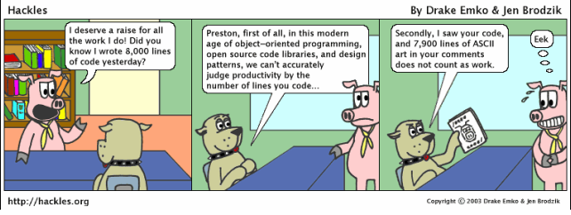

Have you ever noticed that most designs for cars, phones, machines, etc. look very similar to each other? That is because most people generally use the solutions that people in the past had encountered and already found solutions to. There is no need to stress, spend hours, and put in so much effort into a problem that has already been solved. This is called a design pattern. There are millions of designs out there that you could just take, and just make improvements and implementations to.
“Isn’t this copying?” you may ask. Well not necessarily because we have seen these types of problems before, and we are just solving it without having to reimagine the whole idea. We take these solutions as a learning experience. Copy + pasting is a different type of action. When you copy and paste, you don’t necessarily learn the material, and you don’t try to implement your own aspects into it. Design patterns are there to help you rebuild these known solutions when you encounter the known problems.

Design patterns are also seen in a lot of software engineering codes. There are a lot of libraries that people have made to help you with your coding. For example, bootstrap makes it easy for programmers to style their websites without having to put in long efforts into creating their own designs. Of course there are pros and cons to design patterns. A few of the solutions that are already created may not be as great, and you may need to make major improvements to your code if you use it. It is our job to determine if the design pattern is good or if it is what we need.
For my codes specifically, I have used a lot of design patterns. The most common design pattern that I have used is bootstrap. Creating a design for a website takes a long time, and requires a lot of debugging. Using bootstrap has significantly helped me create designs for websites in a less amount of time. I also use meteor to create functioning websites. If we had not used a template for our final project, I think it would have taken us a really long time to create it.
Design patterns is a tool for people who work smarter, not harder.